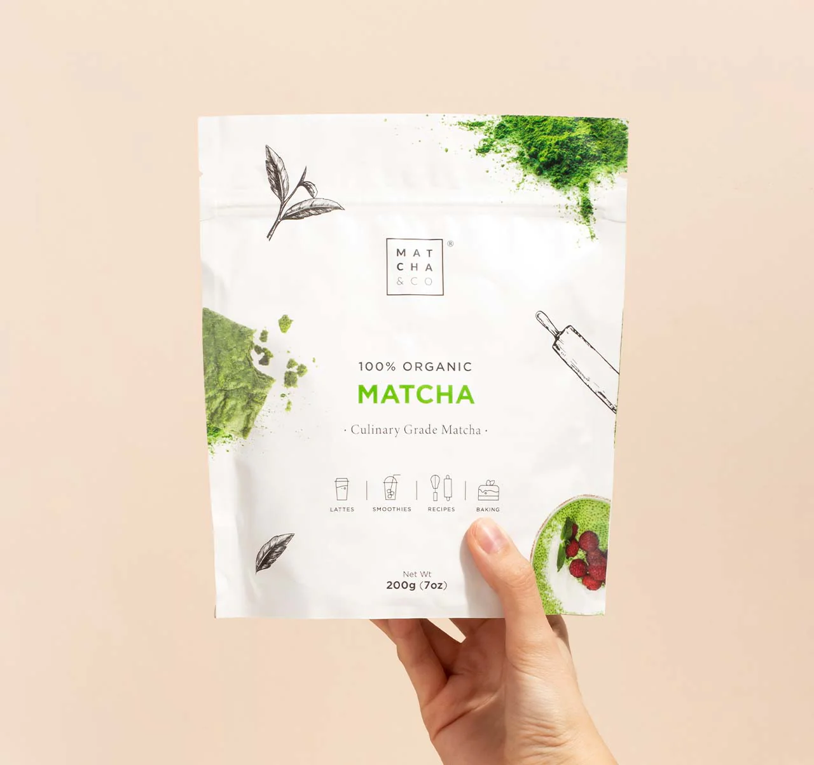

Matcha en Poudre PREMIUM
Le produit phare de Thé House, c'est le top du thé matcha premium bio, récolté sur l'île de Kyushu et produit d'un assemblage par le maître de chai. Idéal pour débuter !
Prix: 33.95€/30g

Thé Matcha Biologique
Découvrez notre thé matcha biologique, cultivé de manière responsable sans l'utilisation de pesticides ni d'engrais chimiques. Profitez d'une tasse de thé matcha saine et délicieuse!
Prix: 82€/80g

Thé Matcha Culinaire
Poudre de thé Matcha biologique de qualité culinaire provenant d'Uji, Kyoto, Japon. Saveur parfaite pour réaliser des recettes avec du thé matcha.
Prix: 19.95€/30g
Thé Matcha Cérémonie
100 % poudre de th√© vert matcha bio - Origine Nishio (Aichi, Japon) R√©colte et production 100 % manuelles ‚Ä¢ Th√© matcha traditionnel (√† l'eau) ‚Ä¢ Th√© matcha latte ‚Ä¢ P√¢tisserie On ne saurait produire un matcha de meilleure qualit√©. D'une grande finesse et sans amertume, il est votre pr√©f√©r√© et a remport√© le prix du üèÜ Meilleur Produit BIO 2024 !
Prix: 28€/30g